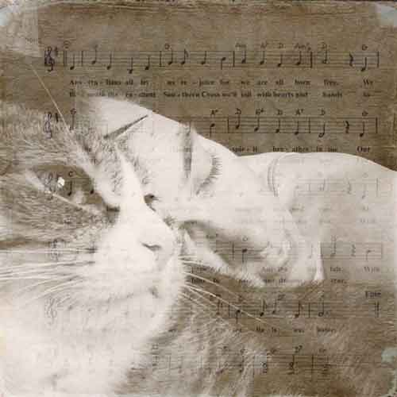

Paws Need Claws
The truth and everything else you need to know about declawing...humane alternatives, get involved, and more!!

The greatness of a nation and its moral progress can be judged by the way its animals are treated.
- Gandhi